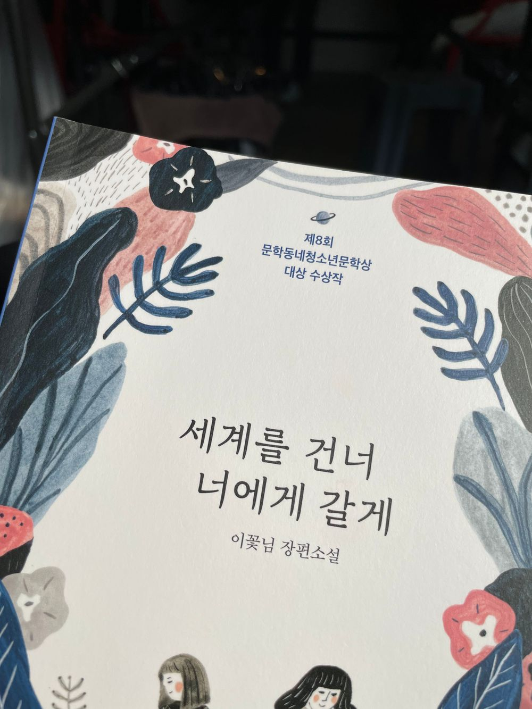

...우왕 .. 이 기분은 멀까여
오늘 대기 시간이 길 것 같아서 아침에 급하게
책을 하나 챙겨왔어여
생각보다 빨리 읽혀서 방금 다 읽었는데
눈물이 날 뻔 했어요 😂
사실 촬영 때문에 아무생각없이 울지 못한 게 답답할
정도로 뭔가 여운이 남았다고 해야할까요 ㅋㅋㅋㅋ!!!
역시 저는 가족을 주제로 한 영화나 책에 공감하고 몰입하는 것 같아요
또 특히 책으로 읽었을 때 더 배가 되는 기분 ??
눈물 날 만큼 슬펐지만 이렇게 몰입해서 재밌게 읽을 수 있는 책을 만나서 오늘은 기분이 너무 좋을 것 같아요
아 이 책을 읽으면서
가끔 미치도록 네가 안고싶어질 때가 있어_가을방학
이 노래를 들었는데 너무 좋았어여
사실 유튜브 뮤직 뮤직 스테이션 틀어놔서 처음 들어봤지만 ...! ㅋㅋㅋㅋㅋㅋㅋㅋ
책이랑 너무너무 잘어울렸어
제가 이렇게 감성적인 날 드문데
오늘은 같이 얘기해야할 것 같았어여 흑흑
날씨가 너무 좋아서 그래 ☀️